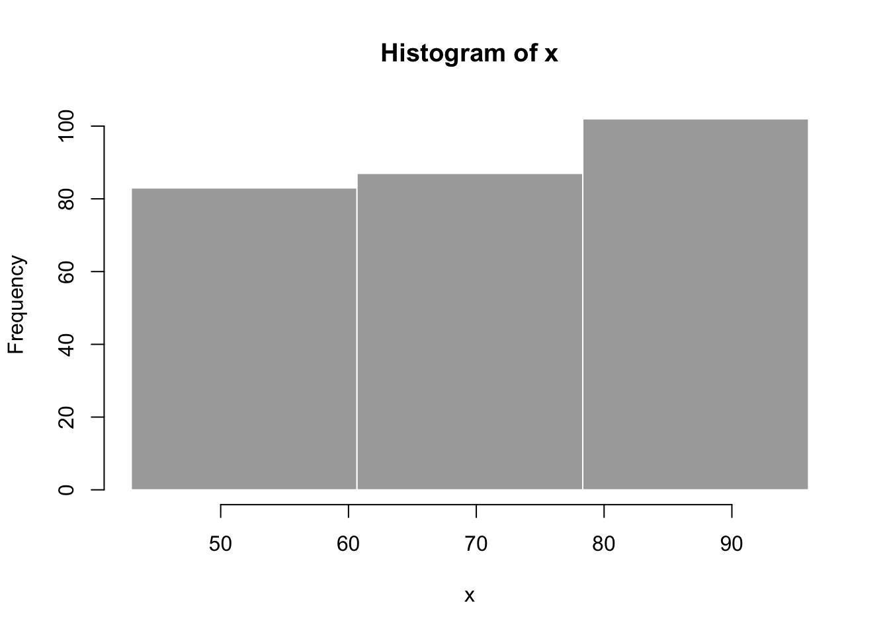

12 Shiny
12.1 Introduction
Shiny is an R package that makes it easy to build interactive web apps straight from R.
https://gallery.shinyapps.io/simple_regression/
12.2 A First Shiny App
Because Shiny is written by the same company as RStudio, it is closely integrated into the IDE. To start a fresh Shiny app, simply click on the new document icon and select ‘Shiny Web App’.
You will be greeted by a dialog that allows you to specify a name and a location. The ‘Application name’ is the name of the directory that will be created within the specified location. You can also choose if you want to use multiple files or a single file. Choose ‘Multiple Files’.
RStudio will add a small template application to the specified folder. Click
‘run App’ to see what it does: It plots a histogram of faithful$eruptions,
and allows the user to control the number of bins in the histogram.
12.2.1 User Interface ui.R
Let’s see how it works. The Shiny app consists of two R files, ui.R and
server.R. ui.R describes the user interface. Basically, it contains R
functions that write HTML. You can verify by running the code of ui.R in
the console: It writes the HTML that describes the user interface.
Let’s focus on the only input element, sliderInput. It describes the slider
you saw in the app. The first argument, inputId, is the most important one.
Through this ID, the shiny server recognizes the elements in the user
interface, so it is important that the ID matches the corresponding ID in
server.R. We will discuss that in a second.
The other arguments of sliderInput are straightforward: A label, two values
specifying the range of the slider, and a default value which is shown on
startup. Try modifying these values to see what happens in the app.
There is a single output element, plotOutput, which draws the histogram
plot. Again, the first argument is an ID, outputId, which must match the
corresponding value in server.R. There are a bunch of additional arguments
to plotOutput, but we will not discuss them here. See ?plotOutput.
12.2.2 Server Logic server.R
The second file, server.R, tells the server how inputs should be translated
into R calculations, and how the result of R calculations should be
translated into outputs.
Check out the input$bins element, which is part of the input list, which
is one of the two required objects in the server function, shinyServer.
input$bins contains the value that the user has entered in the user
interface, using the same ID, bins, which we have specified in ui.R.
The input is used to perform some R calculations. Here, we are using it to calculate the ‘breaks’ of the bins in the histogram. As this is normal R code, you can also run it in the R console, e.g.,
Having calculated the bin breaks, we are using these values to produce a
histogram, using the breaks argument of the hist() function. In pure R:

The Shiny function renderPlot captures the plot and prepares it fo display
in the user interface. Note that the result of renderPlot is assigned to
the output$distPlot element of the output list, which is the second
required argument of the shinyServer function. As for the input, the name
of the element needs to match the name of the ID in ui.R.
A central concept in shiny Apps is the concept of reactivity. If input$bins
is changed by the user, all the calculations that depend on it are
recalculated.
To recap, the main steps of building the server logic are:
Save objects to display to output$
Build objects to display with render*()
Access input values with input$
12.2.3 Debugging
As you will see in the next exercise, debugging is one of the main challenges
when we write shiny applications. There are two simple ways to figure out
what is going on when things do not behave as we want. The most useful is
simply to add print statements to server.R. This way, the value of
variable will be printed to the R console after each evaluation.
Another useful command is the browser() statement, which works as in
standard R. It stops the execution of the program at the statement, so can
investigate the values of the variables.
As a preliminary exercise, add a print statement to server.R of the demo
app that prints the value of bins to the console. Run the app and see how
it reacts on changes in the input.
12.3 Excercises
- Modify the shiny example app to include the following scatterplot:
library(tidyverse)
boston <- as_tibble(MASS::Boston)
boston %>%
ggplot(aes(x = lstat, y = medv)) +
geom_point()- Add a selector to
ui.R, where you can select the column names. Store the selected column name under idcname.
## [1] "crim" "zn" "indus" "chas" "nox" "rm" "age"
## [8] "dis" "rad" "tax" "ptratio" "black" "lstat" "medv"- Use
input$cnameto select the column name from the ui.

12.4 Where to Go From Here
12.4.1 More Input Elements
There are a couple of additional input elements in Shiny, see the corresponding help pages to see how they work.
actionButtoncheckboxGroupInputdateInputdateRangeInputfileInputnumericInputpasswordInputradioButtonsselectInputsliderInputsubmitButtontextAreaInputtextInput
12.4.2 More Output Elements
Each render function has a corresponding Output function.
server.R |
ui.R |
|---|---|
renderDataTable |
dataTableOutput |
renderImage |
imageOutput |
renderPlot |
plotOutput |
renderPrint |
verbatimTextOutput |
renderTable |
tableOutput |
renderText |
textOutput |
renderText |
textOutput |
renderUI |
uiOuptut, htmlOutput |
12.4.3 More on Reactivity
The
reactive()function allow you to define reactive expressions. These are useful if you need the result of your calculations for several outputs.The
observe()function, together with ‘reactiveValues’ serves a similar purpose, but it is recommended to usereactive()unless you have good reason not to.isolate()allows you to read an input value without triggering a reaction.which is often useful with
actionButton. If you have time consuming calculations, you don’t want to run them each time a user is changing inputs. So you can add anactionButtontoui.R, and put all the other inputs in anisolate(). That way, only clicking the button will trigger the calculation.